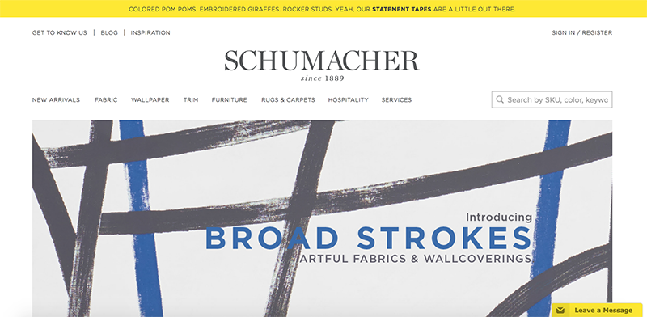
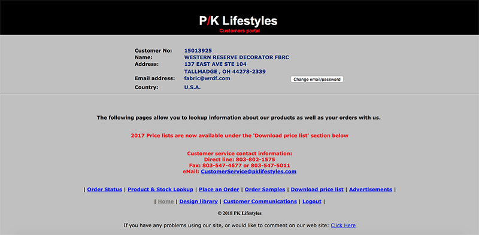

A Website Comparison
Introduction
For the past several years, I have worked for a multi-line home textile and design showroom. As their social media director and an interior design assistant, one of my daily tasks involves visiting dozens of different vendor websites in order to check pricing and stock, order samples, contact representatives, etc. While there are, of course, differences in vendors based on their product alone, vast differences in their websites are easy to discern when one is using them side-by-side on a daily basis. While these differences might seem minor, they represent a discrepancy in attention to service which makes users like me naturally form a preference for working with one company over another. For this assignment I am comparing the website of Schumacher, which I feel is very successful; and the website of P/K Lifestyles, which I feel is substantially less successful.
A Successful Website
Schumacher is a higher-end textile vendor that also sells wallpaper, furniture, and rugs. All of these product categories are displayed prominently on the website homepage, which allows visitors to navigate to the desired information quickly and easily. Additionally, several other helpful services are made convenient on different areas of the homepage. For example, a search bar in the upper right hand corner makes it easy to find specific items while a customer chat widget in the bottom right hand corner allows for quick customer service that makes it easy to multi-task when a user might be, for example, on the phone with another vendor or a client.
In perhaps one of the most visual industries, the aesthetic of Schumacher's website feels like a fresh update on traditional- much like the company's fabrics. Despite being nearly 130 years old, there is not a thread of the datedness that plagues many company websites in the fabric industry; an industry that is often thought of as antiquated or passé. Aesthetically, the homepage design touches on many key points of Nielsen's Introduction to Usability. Learnability is immediate thanks to clear and bright navigation menus and graphics; both of which positively affect memorability and efficiency.
The company naturally has a motive of increased sales, and, like fashion, interior textile houses release new product seasonally or even monthly. The Schumacher website does a good job of highlighting new products in prominent spots throughout its homepage. Most obviously, of course, is the large graphic banner that scrolls through a range of new lines. Less eminent is a news crawler-style graphic across the very top of the screen that briefs users on product less graphically. Lastly, if one wishes to see new introductions in one place, there is a 'New Arrivals' tab before the general product menu. While new products might seem like a trivial aspect of the website to be focusing on, it is important in an industry where company showrooms are often isolated from one another; allowing the company to save capital as it is not required to send a regional sales representative across multiple states to introduce new product.
An Unsuccessful Website
Despite being substantially 'younger' than Schumacher at 95 years since its founding, the P/K Lifestyles homepage immediately feels far more outdated than many of its industry competitors not just aesthetically, but also when analyzed through Neilsen's Usability points. While Schumacher's website immediately greets users with learnability and satisfaction, the P/K Lifestyles landing page is slightly less welcoming. Yes, there are basic navigation links at the bottom of the screen, however they are clunky and difficult to use with over half of the links leading to pages requiring users to download external PDFs and documents only to sift through dozens of pages to find the information that is made convenient on competitor sites.
As discussed in the Schumacher website analysis, sales are naturally the priority of these companies. While most comparable websites allow users to see extensive products at once and even sort products by color, material, use, width, etc., P/K Lifestyles requires an exact search by pattern name only. This is convenient only if one knows the exact name and spelling of what they're looking for but does not allow for the discovery of new or unknown products. While the homepage shows a 'Design Library' link at the bottom navigation panel, it has a broken link for several years and, even if it wasn't broken, why should users be directed to a separate site for what should be a basic feature?
One of the key tasks for which these websites are used is the ordering of memo samples to be sent directly to clients or to the showroom. Because space is limited and the dozens of vendors represented each have hundreds or thousands of fabrics, it is impossible to keep samples of every single product. While most websites allow users to add samples to their cart as they scroll through the virtual library of fabrics (similar to a typical e-commerce website), P/K Lifestyles links users to an external order form where they have to plug in the exact pattern/color of each fabric desired.
As mentioned above, these companies each carry extensive amount of products with new releases several times per year, which leads to discontinued or out-of-stock fabrics on a near-daily basis. It is common for websites to list the available stock on each product page, which P/K Lifestyles has done- at the bare minimum. Schumacher, and most other leading companies, list specific yardage pieces (and their geographical location) as well as the amount of new yardage coming in at a future date. This information may be available via a phone call to P/K Lifestyles, however that is defeating the purpose of a website. Additionally, P/K does not give users the basic function of reserving yardage from the website.
Conclusion
In the 21st-century, it is not simply product that differentiates companies from one another. 'Customer' experience goes beyond the tangible, with a company's virtual precense being just as important to satisfaction. With aesthetics aside, the differences between the websites of Schumacher and P/K Lifestyles might seem minor, however the discrepancies become significant when one is relying on their services on a daily basis. The natural preference formed for one company unavoidably extends all the way to a client level as users like me are representing and referring these companies to my own customers and clients; directly affecting a company's sales and success.